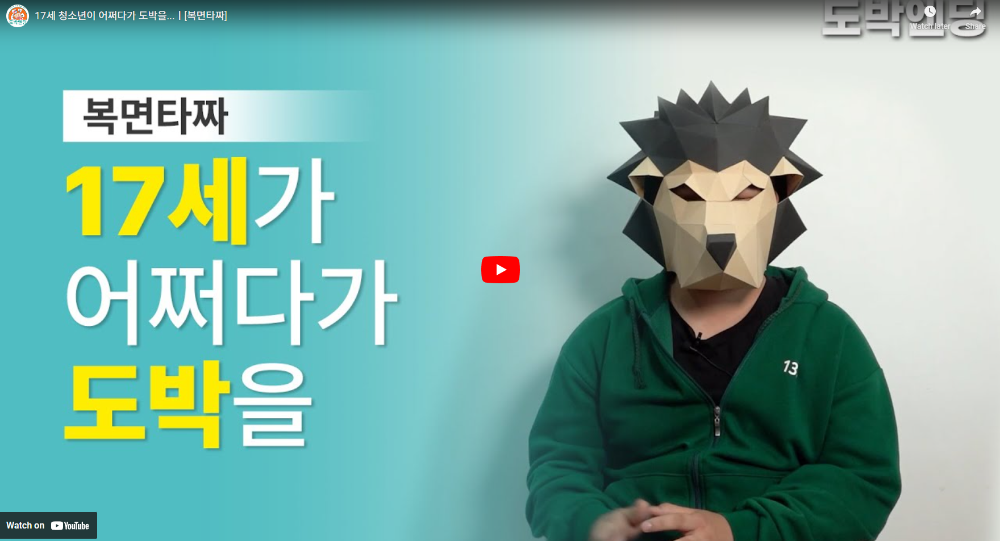
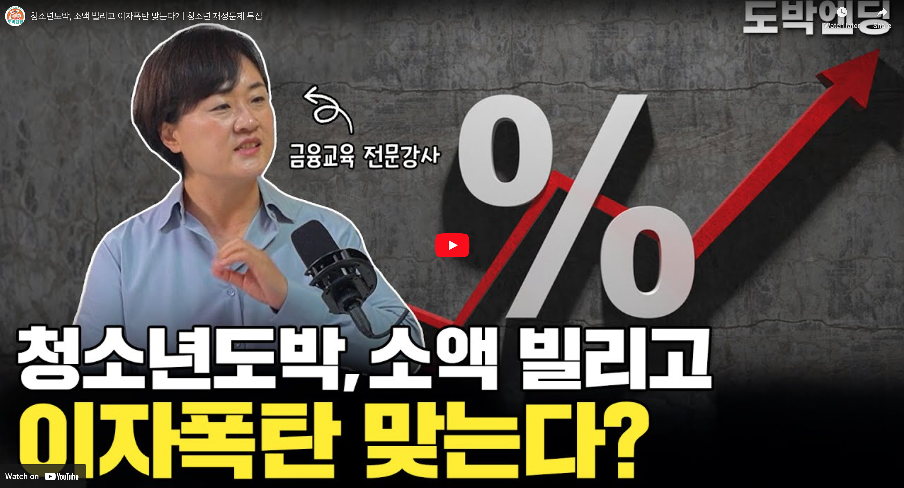
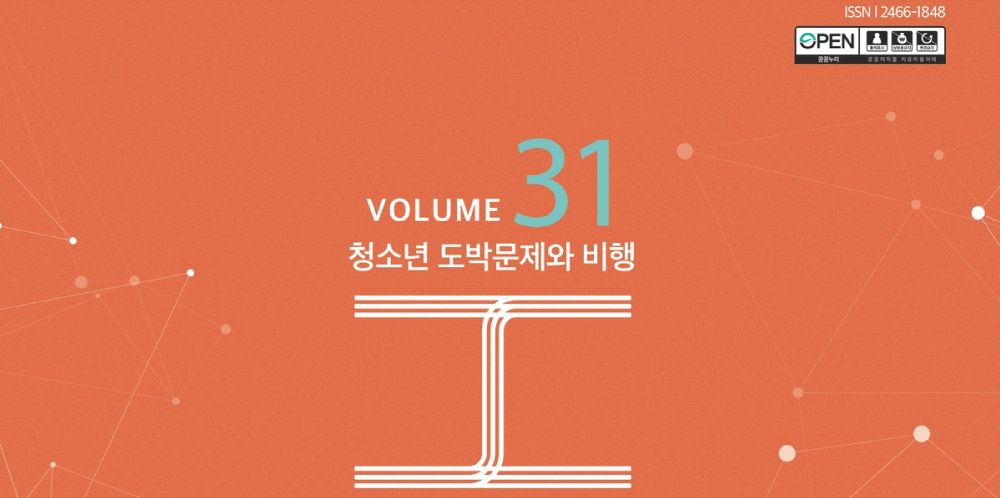

 |
 |
 |
 |
 |
 |
17세 청소년이 어쩌다가 도박을..(4분 53초) 실제 도박폐해 경험 청소년 사례 소개 |
청소년 도박, 소액 빌리고 이자폭탄 맞는다?(19분 43초) 청소년 도박문제와 관련한 다양한 재정상담 |
한국도박문제예방치유원 기관소식지(’24년 31호) - 전문가 칼럼 : 온라인 도박과 2차 범죄 |
도박에 눈이멀다 ’23년 한국도박문제예방치유원 도박문제 예방공모전 포스터 부문 대상작 |
도박의 인질이 되겠습니까? ’23년 한국도박문제예방치유원 도박문제 예방공모전 포스터 부문 대상작 |
응답이 없습니다 ’23년 한국도박문제예방치유원 도박문제 예방공모전 포스터 부문 대상작 |